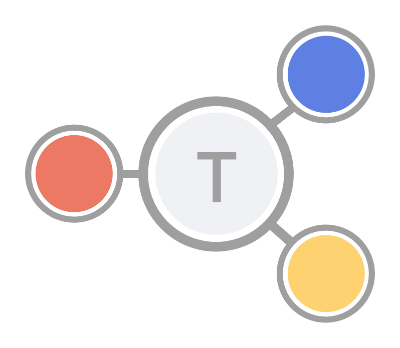
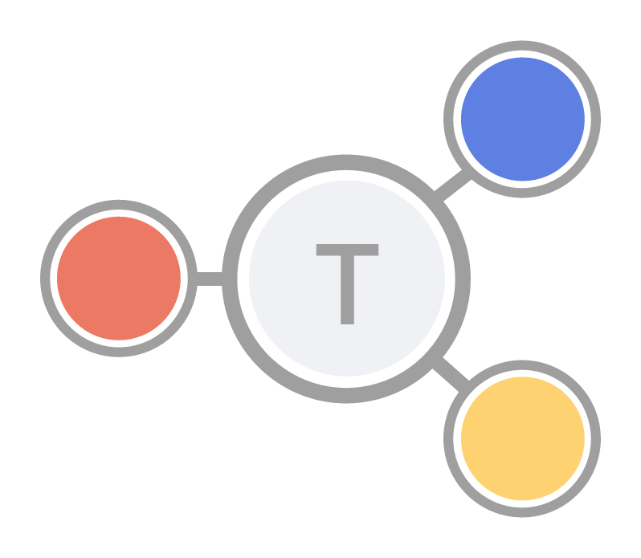

The Hybrid Graph Datastore/Computational Engine
Features
- Distributed, resilient, and fast static graph store.
- Support distributed computation.
- Online queries and traversal.
- Scalable to billions of nodes and edges.
- Easy setup for both cluster and single instance installations.
- User friendly and intuitive interface for graph analysis, fast algorithm processing and visualization.
The following section expose the PROS and CONS of Trueno. This may change in the near future.
What is Trueno good for?
- Graph analytic at small and big scale
- Small and large graph data persistent storage
- Quick starting point and long run graph analytics projects
- Extendable applications(multiple drivers support)
- Experiment and design of graph algorithms(via GraphX)
What is Trueno NOT good for?
- Transactional applications: Trueno does not support ACID transactions.
- Strict consistency requirement: Trueno is eventual consistent.